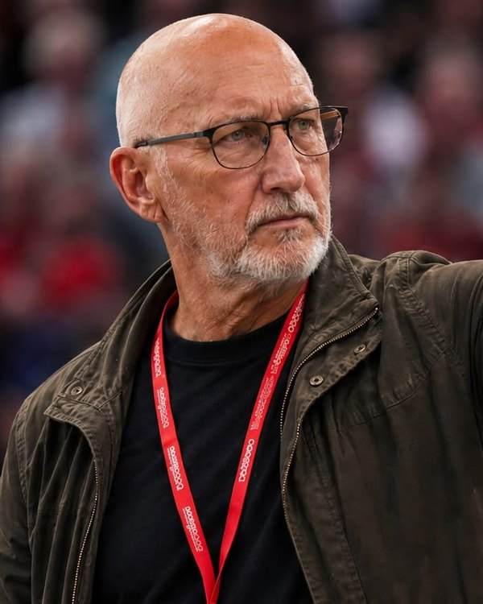

Fratelli d'Italia · Mugello
Fabio Ceseri
Sono dirigente di Fratelli d'Italia. Seguo da vicino l'attività dei nostri Comuni e degli eletti toscani. Ogni giorno curo la Rassegna FdI Toscana.

Fratelli d'Italia · Mugello
Sono dirigente di Fratelli d'Italia. Seguo da vicino l'attività dei nostri Comuni e degli eletti toscani. Ogni giorno curo la Rassegna FdI Toscana.
